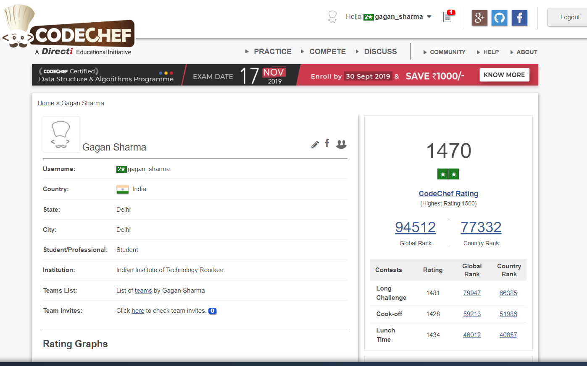

| Home | Educational Background | Project Experiences | Learning Interests during B.Tech | Hobbies | Blog | Some Memories | Useful Weblinks | Contact Me |
My hobbies include sports, competetive programming, reading novels and writing content. Though I do listen to music also, it's not as regular for it be classified as a hobby. I also spend a considerable amount of time surfing the internet and reading any articles that spark my interest.
Speaking of books, one of my favourite books is War of the Worlds. This author beautifully brings home the idea of authority of mother nature and theme that forced domination never survives no matter how pwerful dominator may be. The book can easily make you live through the moments as the author and also the philosophy of saving human as race rather as individuals of a mere soldier got me awe struck. Do give this book a read if you ever get time and are looking for an escape from the universe. Other books that I'll mention is Three men in a boat and my novel "Rohan, the detective" ;). |
|
I would like to suggest every individual who aspire to pursue CSE to start competitive programming right from the beginning. If you are a maths enthusiast i can assure you that you are going to love this sport. Once you start and love it, it is really addictive. In discussions of competitive programming, people sometimes point out that the skills developed for competitions are overkill for typical software development jobs.It is true that many people with a software development background are hired for jobs that do not require extensive knowledge of algorithms or performance optimization. Some of these jobs may not even involve much coding at all. But clearly there are also quite a few developers working on operating system kernels, compilers, graphics rendering engines for multi-player games, and other projects that require specialized skills. If you are interested in that type of job, then it does not really matter what the typical programming job looks like. The skills that you learn preparing for programming competitions will be quite relevant to the job that you are looking for. |
 |